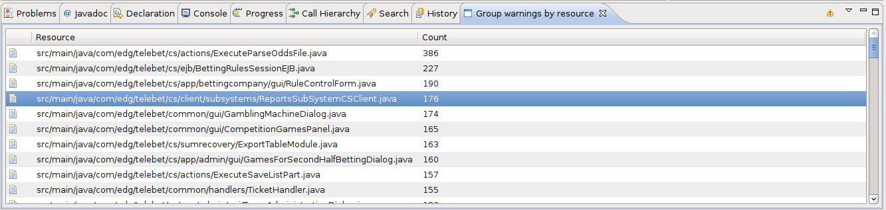

Simple Eclipse plugin to show count of errors and warnings in
workspace grouped by resources.
Author
Branko Kokanovic (contact: my name in lower case with dot between name and
surname on gmail)
Download
Binary
You can download
jar here.
Source
You can download this project in either zip
or tar
formats.
You can also clone the project with Git
by running:
$ git clone git://github.com/stalker314314/groupwarnings
Install
If you downloaded binary package, just drop it to
plugins/ directory of yours Eclipse installation. Plugin is working only
with Eclipse 3.5+.
Usage
Open Windows->Show View->Others. Then select Group
Warnings->Group Warnings by resource. After building, you can
refresh this view by clicking on warning icon in view.
Why
This plugin is great helper when you have large number of warnings in
your project and you want to get rid of them, but you just can't commit
like maniac for any reason (for example, you will increase size of the
patch). This way, you can clean warnings, going file by file, but you
can see what files have most warnings and clean them first.
Screenshot



{kind=link}